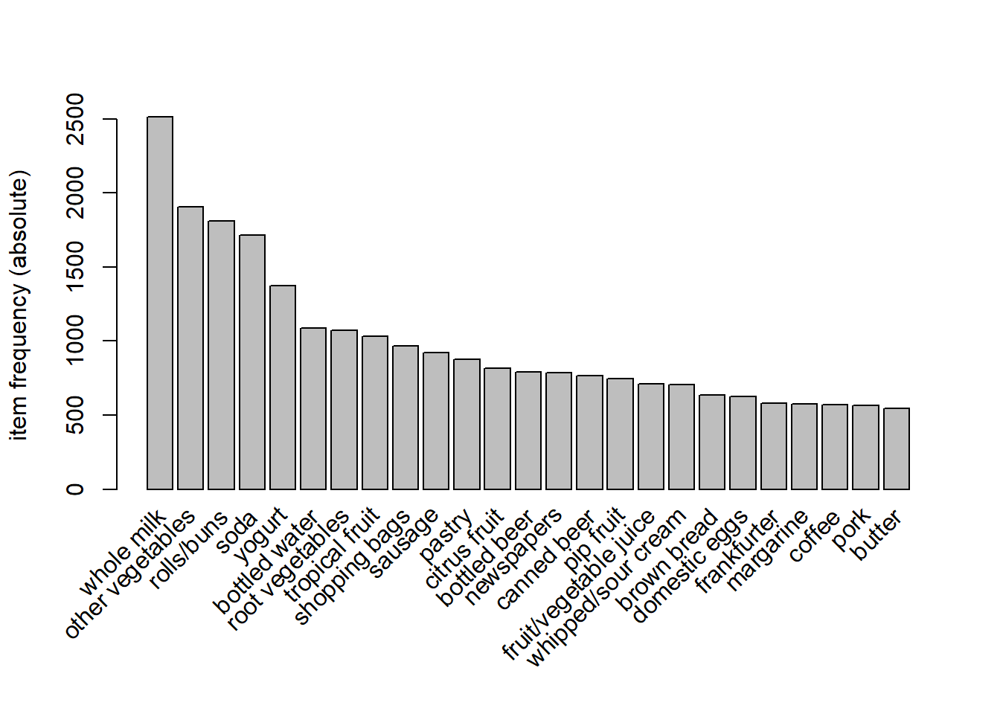
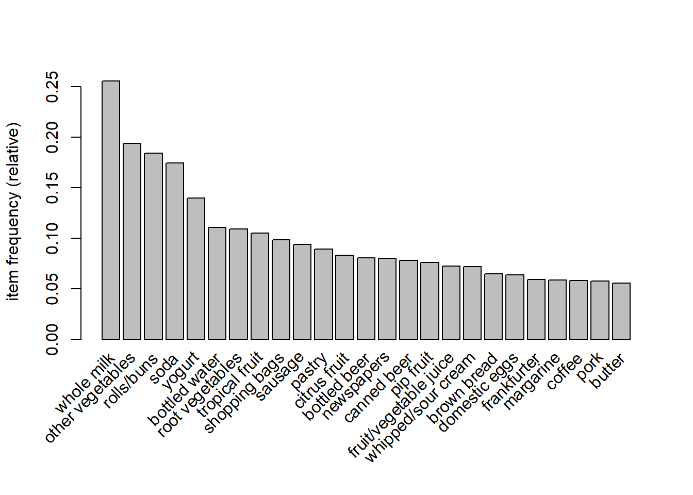
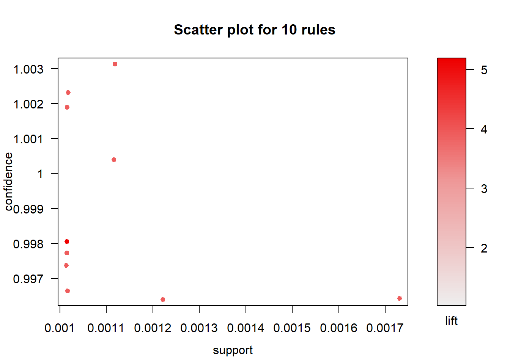
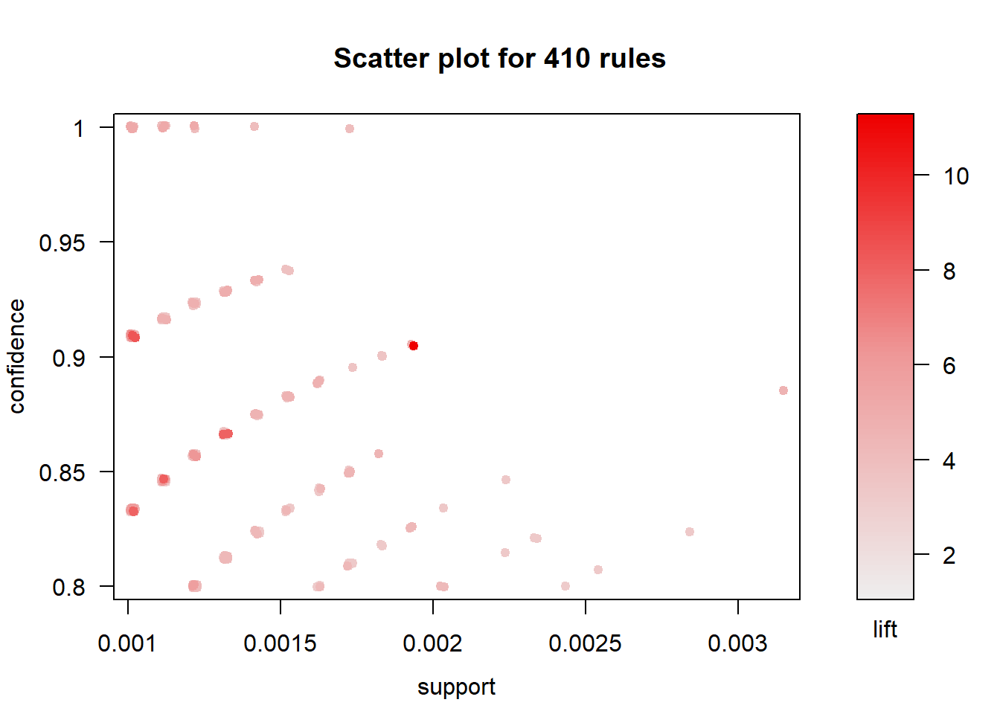
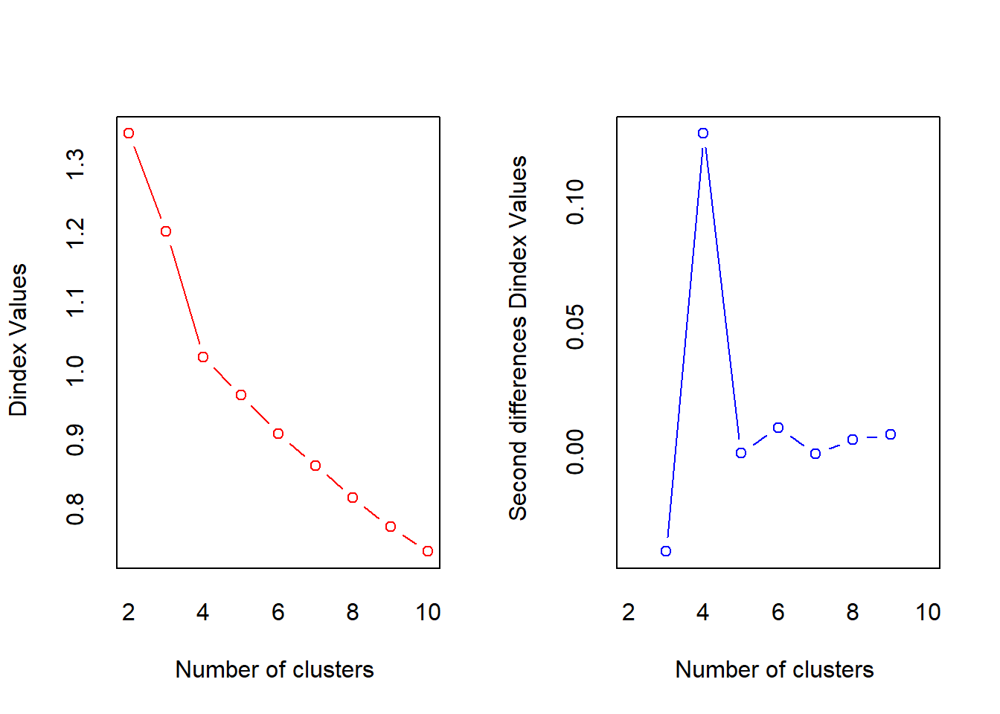
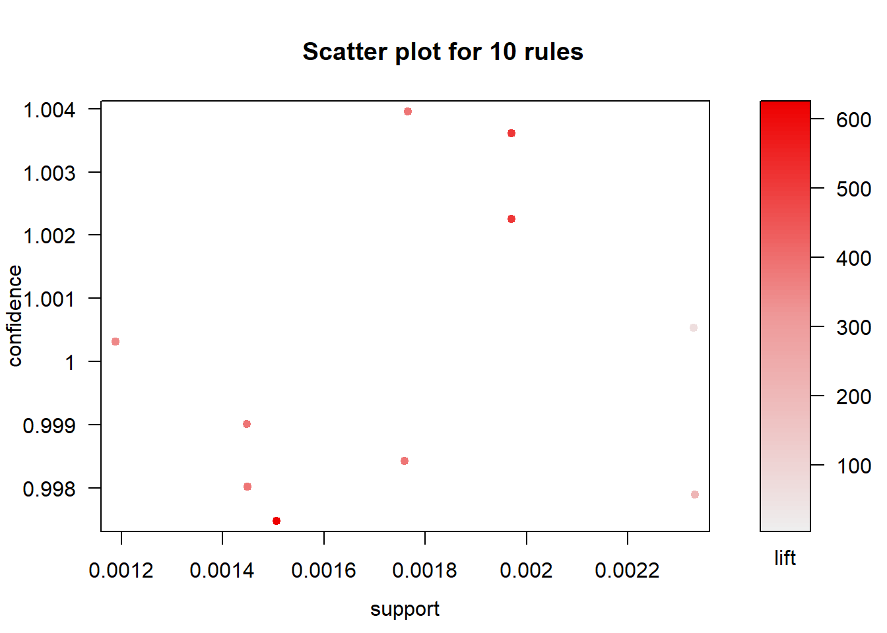
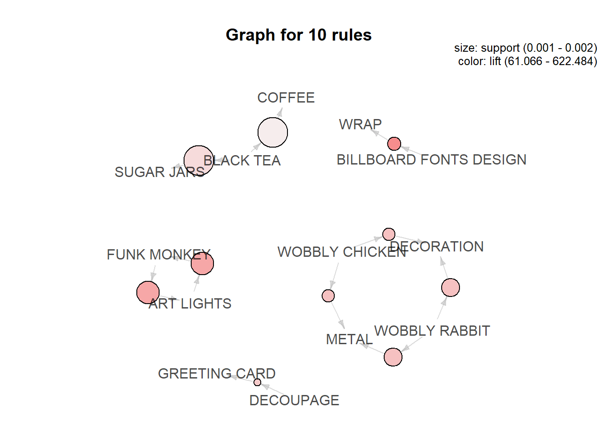
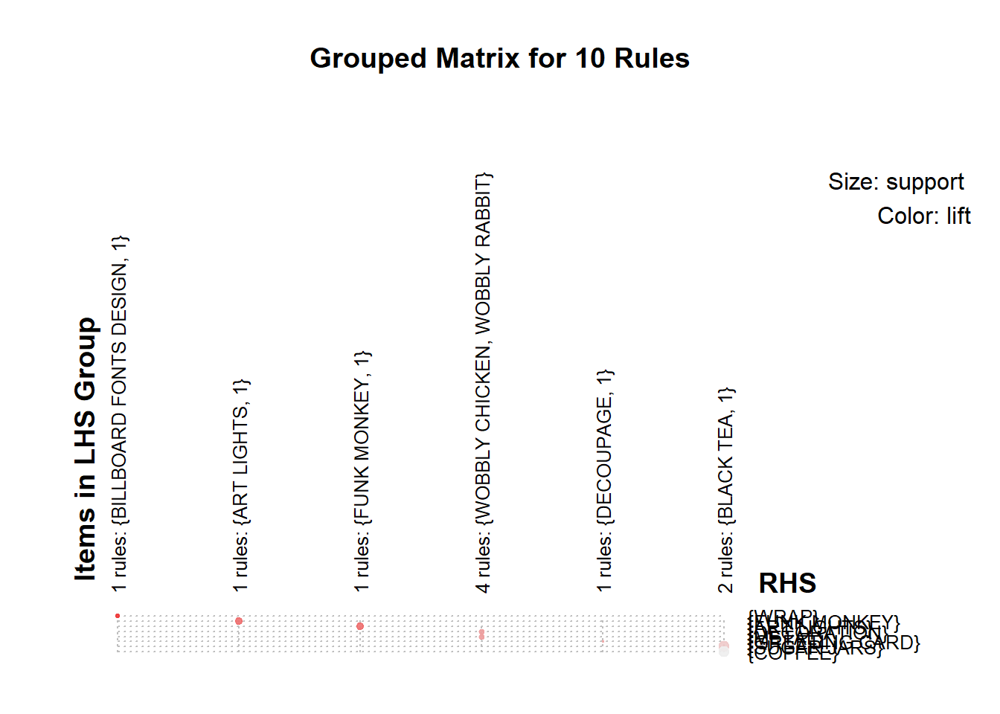
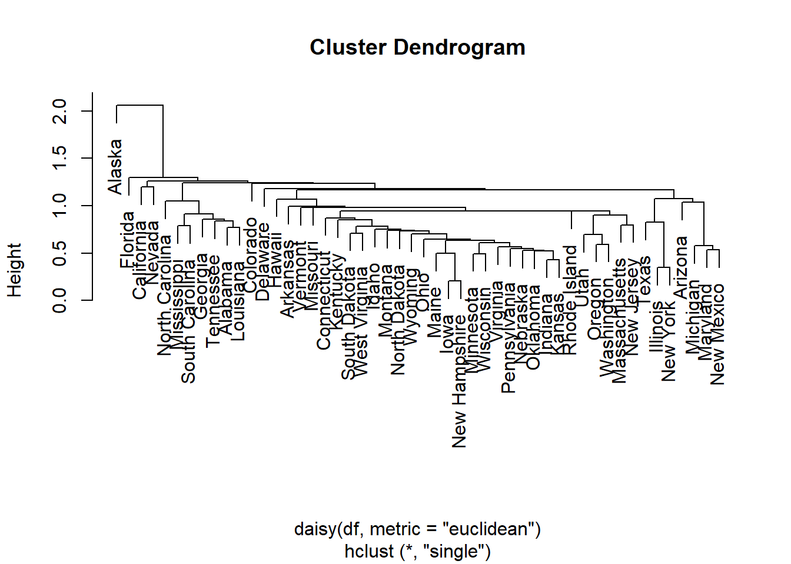
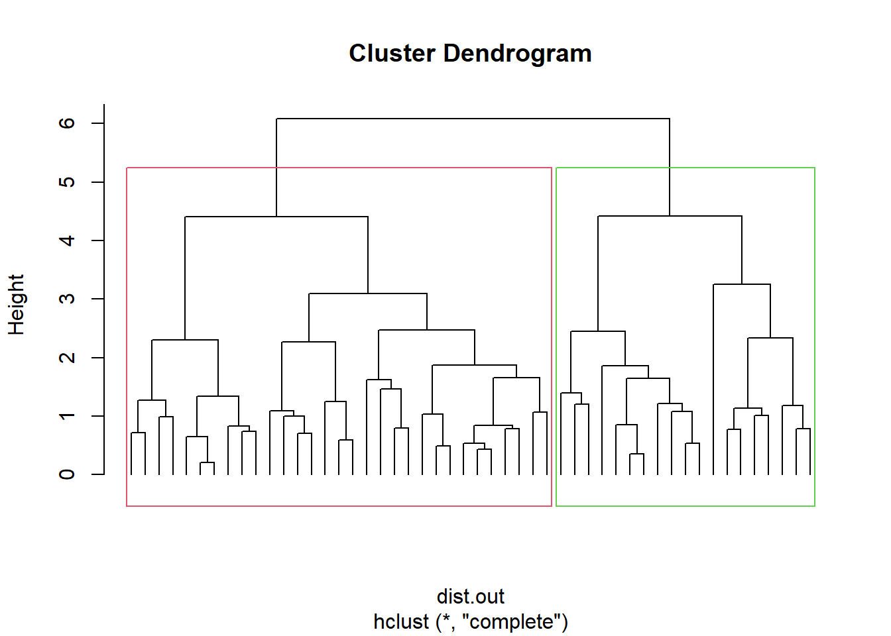

Chapter 3 Cluster Analysis - USArrest dataset
We will use the built-in R dataset USArrest which contains statistics, in arrests per 100,000 residents for assault, murder, and rape in each of the 50 US states in 1973. It includes also the percent of the population living in urban areas. It contains 50 observations on 4 variables:
3.1 Prerequisites
We will need the following packages:
## Warning: package 'fpc' was built under R version 4.4.3## Warning: package 'ggplot2' was built under R version 4.4.3## Warning: package 'tibble' was built under R version 4.4.3## Warning: package 'purrr' was built under R version 4.4.3## Warning: package 'lubridate' was built under R version 4.4.2## ── Attaching core tidyverse packages ──────────────────────── tidyverse 2.0.0 ──
## ✔ dplyr 1.1.4 ✔ readr 2.1.5
## ✔ forcats 1.0.0 ✔ stringr 1.5.1
## ✔ ggplot2 4.0.3 ✔ tibble 3.3.0
## ✔ lubridate 1.9.4 ✔ tidyr 1.3.1
## ✔ purrr 1.1.0
## ── Conflicts ────────────────────────────────────────── tidyverse_conflicts() ──
## ✖ dplyr::filter() masks stats::filter()
## ✖ dplyr::lag() masks stats::lag()
## ℹ Use the conflicted package (<http://conflicted.r-lib.org/>) to force all conflicts to become errors##
## Attaching package: 'magrittr'
##
## The following object is masked from 'package:purrr':
##
## set_names
##
## The following object is masked from 'package:tidyr':
##
## extract##
## Attaching package: 'cowplot'
##
## The following object is masked from 'package:lubridate':
##
## stamp## Warning: package 'clValid' was built under R version 4.4.3## Warning: package 'ggfortify' was built under R version 4.4.3## Warning: package 'clustree' was built under R version 4.4.3## Loading required package: ggraph## Warning: package 'ggraph' was built under R version 4.4.3## Warning: package 'dendextend' was built under R version 4.4.3##
## ---------------------
## Welcome to dendextend version 1.19.0
## Type citation('dendextend') for how to cite the package.
##
## Type browseVignettes(package = 'dendextend') for the package vignette.
## The github page is: https://github.com/talgalili/dendextend/
##
## Suggestions and bug-reports can be submitted at: https://github.com/talgalili/dendextend/issues
## You may ask questions at stackoverflow, use the r and dendextend tags:
## https://stackoverflow.com/questions/tagged/dendextend
##
## To suppress this message use: suppressPackageStartupMessages(library(dendextend))
## ---------------------
##
##
## Attaching package: 'dendextend'
##
## The following object is masked from 'package:stats':
##
## cutree## Warning: package 'factoextra' was built under R version 4.4.3## Welcome! Want to learn more? See two factoextra-related books at https://goo.gl/ve3WBa## Warning: package 'FactoMineR' was built under R version 4.4.3## Warning: package 'corrplot' was built under R version 4.4.2## corrplot 0.95 loaded## Registered S3 method overwritten by 'GGally':
## method from
## +.gg ggplot2## Warning: package 'ggiraphExtra' was built under R version 4.4.3## Warning: package 'knitr' was built under R version 4.4.3##
## Attaching package: 'kableExtra'
##
## The following object is masked from 'package:dplyr':
##
## group_rowsLoad the data set
data("USArrests")
# Remove any missing value (i.e, NA values for not available)
# That might be present in the data
df <- na.omit(USArrests)
# View the firt 6 rows of the data
head(df, n = 6)## Murder Assault UrbanPop Rape
## Alabama 13.2 236 58 21.2
## Alaska 10.0 263 48 44.5
## Arizona 8.1 294 80 31.0
## Arkansas 8.8 190 50 19.5
## California 9.0 276 91 40.6
## Colorado 7.9 204 78 38.7Before clustering is done, we can compute some descriptive statistics for the data
desc_stats <- data.frame(
Min = apply(df, 2, min), # minimum
Med = apply(df, 2, median), # median
Mean = apply(df, 2, mean), # mean
SD = apply(df, 2, sd), # Standard deviation
Max = apply(df, 2, max) # Maximum
)
desc_stats <- round(desc_stats, 1)
head(desc_stats)## Min Med Mean SD Max
## Murder 0.8 7.2 7.8 4.4 17.4
## Assault 45.0 159.0 170.8 83.3 337.0
## UrbanPop 32.0 66.0 65.5 14.5 91.0
## Rape 7.3 20.1 21.2 9.4 46.0Note that the variables have large different means and variances. Therfore we need to standardise them.
## Murder Assault UrbanPop Rape
## Alabama 1.24256408 0.7828393 -0.5209066 -0.003416473
## Alaska 0.50786248 1.1068225 -1.2117642 2.484202941
## Arizona 0.07163341 1.4788032 0.9989801 1.042878388
## Arkansas 0.23234938 0.2308680 -1.0735927 -0.184916602
## California 0.27826823 1.2628144 1.7589234 2.067820292
## Colorado 0.02571456 0.3988593 0.8608085 1.864967207For partition clustering methods we will assume that K=2 clusters
3.2 K-means clustering
We will use the kmeans() function in the stats package.
set.seed(123)
km.out <- kmeans(df, 2, nstart = 25)
# k-means group number of each observation
km.out$cluster## Alabama Alaska Arizona Arkansas California
## 1 1 1 2 1
## Colorado Connecticut Delaware Florida Georgia
## 1 2 2 1 1
## Hawaii Idaho Illinois Indiana Iowa
## 2 2 1 2 2
## Kansas Kentucky Louisiana Maine Maryland
## 2 2 1 2 1
## Massachusetts Michigan Minnesota Mississippi Missouri
## 2 1 2 1 1
## Montana Nebraska Nevada New Hampshire New Jersey
## 2 2 1 2 2
## New Mexico New York North Carolina North Dakota Ohio
## 1 1 1 2 2
## Oklahoma Oregon Pennsylvania Rhode Island South Carolina
## 2 2 2 2 1
## South Dakota Tennessee Texas Utah Vermont
## 2 1 1 2 2
## Virginia Washington West Virginia Wisconsin Wyoming
## 2 2 2 2 23.2.1 K-means with different clusters
km2 <- kmeans(df, 2)
km3 <- kmeans(df, 3)
km4 <- kmeans(df, 4)
km5 <- kmeans(df, 5)
km6 <- kmeans(df, 6)
km7 <- kmeans(df, 7)
km8 <- kmeans(df, 8)
km9 <- kmeans(df, 9)
km10 <- kmeans(df, 10)
km11 <- kmeans(df, 11)
p1 <- fviz_cluster(km2, data = df, ellipse.type = "convex") + theme_minimal() + ggtitle("k = 2")
p2 <- fviz_cluster(km3, data = df, ellipse.type = "convex") + theme_minimal() + ggtitle("k = 3")
p3 <- fviz_cluster(km4, data = df, ellipse.type = "convex") + theme_minimal() + ggtitle("k = 4")
p4 <- fviz_cluster(km5, data = df, ellipse.type = "convex") + theme_minimal() + ggtitle("k = 5")
p5 <- fviz_cluster(km6, data = df, ellipse.type = "convex") + theme_minimal() + ggtitle("k = 6")
p6 <- fviz_cluster(km7, data = df, ellipse.type = "convex") + theme_minimal() + ggtitle("k = 7")
plot_grid(p1, p2, p3, p4, p5, p6, labels = c("k2", "k3", "k4", "k5", "k6", "k7"))
3.3 K-medoids clustering
We will use the pam() in the cluster package.
## Alabama Alaska Arizona Arkansas California
## 1 1 1 2 1
## Colorado Connecticut Delaware Florida Georgia
## 1 2 2 1 1
## Hawaii Idaho Illinois Indiana Iowa
## 2 2 1 2 2
## Kansas Kentucky Louisiana Maine Maryland
## 2 2 1 2 1
## Massachusetts Michigan Minnesota Mississippi Missouri
## 2 1 2 1 1
## Montana Nebraska Nevada New Hampshire New Jersey
## 2 2 1 2 2
## New Mexico New York North Carolina North Dakota Ohio
## 1 1 1 2 2
## Oklahoma Oregon Pennsylvania Rhode Island South Carolina
## 2 2 2 2 1
## South Dakota Tennessee Texas Utah Vermont
## 2 1 1 2 2
## Virginia Washington West Virginia Wisconsin Wyoming
## 2 2 2 2 23.4 Hierarchical Clustering
Here the built-in R function hclust() is used:
3.4.2 Single Linkage
out.single.euc <- hclust(daisy(df,metric="euclidean"),method="single")
# try other metric="euclidean"
plot(out.single.euc)
# decide to cut the tree at height 1
out.single.euc <- cutree(out.single.euc, h=1.5)
# view cluster allocation
names (out.single.euc) <- rownames(df)
sort(out.single.euc)## Alabama Arizona Arkansas California Colorado
## 1 1 1 1 1
## Connecticut Delaware Florida Georgia Hawaii
## 1 1 1 1 1
## Idaho Illinois Indiana Iowa Kansas
## 1 1 1 1 1
## Kentucky Louisiana Maine Maryland Massachusetts
## 1 1 1 1 1
## Michigan Minnesota Mississippi Missouri Montana
## 1 1 1 1 1
## Nebraska Nevada New Hampshire New Jersey New Mexico
## 1 1 1 1 1
## New York North Carolina North Dakota Ohio Oklahoma
## 1 1 1 1 1
## Oregon Pennsylvania Rhode Island South Carolina South Dakota
## 1 1 1 1 1
## Tennessee Texas Utah Vermont Virginia
## 1 1 1 1 1
## Washington West Virginia Wisconsin Wyoming Alaska
## 1 1 1 1 23.4.3 Complete Linkage
Visualization of hclust
plot(hc, labels = F,-1)
rect.hclust(hc, k = 2, border = 2:3) # Add rectangle around 2 clusters, try with 3?
3.5 Methods for determining number of clusters
There are many measures for determining the number of clusters. We will focus on most widely used ones:
- Elbow method
- Silhouette method
- Gap statistic
- Sum of Squares method
- NbClust package
- Clustree package
3.5.1 Elbow method
Here we will look at the Elbow method for the k-means clustering results.
set.seed(123)
# Compute and plot wss for k = 2 to k = 15
k.max <- 15 # Maximal number of clusters
df.out <- df
wss <- sapply(1:k.max,
function(k){kmeans(df.out, k, nstart=10 )$tot.withinss})
plot(1:k.max, wss, type="b", pch = 19, frame = FALSE, xlab="Number of clusters K", ylab="Total within-clusters sum of squares")
abline(v = 3, lty =2)
According to the elbow method, the optimal number of clusters suggested for the K-means algorithm is 3.
3.5.2 Average silhouette method for k-means clustering
k.max <- 15
data.out <- df
sil <- rep(0, k.max)
# Compute the average silhouette width for
# k = 2 to k = 15
for(i in 2:k.max){
km.res <- kmeans(df.out, centers = i, nstart = 25)
ss <- silhouette(km.res$cluster, dist(df.out))
sil[i] <- mean(ss[, 3])
}# Plot the average silhouette width
plot(1:k.max, sil, type = "b", pch = 19,
frame = FALSE, xlab = "Number of clusters k")
abline(v = which.max(sil), lty = 2)According to the silhouette method the optimal number of clusters suggested for the Kmeans algorithm is 2.
3.5.3 Average silhouette method for PAM clustering


These two components explain 86.75% of the point variability.
This table shows how to use the average silhouette width value:
Range of SC : Interpretation
0.71-1.0 : A strong structure has been found
0.51-0.70 : A reasonable structure has been found
0.26-0.50 : The structure is weak and could be artificial
< 0.25 : No substantial structure has been found
According to the table, the fit is weak.
3.5.4 Average silhouette method for hierarchical clustering

Average silhouette width : 0.4
This table shows how to use the average silhouette width value:
Range of SC: Interpretation
0.71-1.0 : A strong structure has been found
0.51-0.70 : A reasonable structure has been found
0.26-0.50 : The structure is weak and could be artificial
< 0.25 : No substantial structure has been found
The result for hierarchical clustering is similar to that of PAM. The conclusion we can make is that fit is weak.
3.5.5 Gap Statistic for K means clustering
# Compute gap statistic
gap_stat <- clusGap(df, FUN = kmeans, nstart = 25, K.max = 10, B = 50)
# Print the result
plot(gap_stat, frame = FALSE, xlab = "Number of clusters k")
abline(v = 4, lty = 2)
According to the Gap Statistic the ’optimal number of clusters chosen for the Kmeans algorithm is 4!
Using the NbClust package which uses a vote to chose the number of clusters. The following example determine the number of clusters using all statistics:
res.nb <- NbClust(df, distance = "euclidean",min.nc = 2, max.nc
= 10, method = "complete", index ="all")
## *** : The Hubert index is a graphical method of determining the number of clusters.
## In the plot of Hubert index, we seek a significant knee that corresponds to a
## significant increase of the value of the measure i.e the significant peak in Hubert
## index second differences plot.
## 
## *** : The D index is a graphical method of determining the number of clusters.
## In the plot of D index, we seek a significant knee (the significant peak in Dindex
## second differences plot) that corresponds to a significant increase of the value of
## the measure.
##
## *******************************************************************
## * Among all indices:
## * 9 proposed 2 as the best number of clusters
## * 4 proposed 3 as the best number of clusters
## * 6 proposed 4 as the best number of clusters
## * 2 proposed 5 as the best number of clusters
## * 1 proposed 8 as the best number of clusters
## * 1 proposed 10 as the best number of clusters
##
## ***** Conclusion *****
##
## * According to the majority rule, the best number of clusters is 2
##
##
## *******************************************************************When all statistics in the NbClust package are allowed to vote, the majority (in this case 9 out of 23) propose that the ‘optimal’ number of clusters should be 2.
3.6 Clustering with CLARA
R function for computing CLARA is found in the in cluster package.
clarax <- clara(df, 2, samples=10)
# Silhouette plot
plot(silhouette(clarax), col = 2:3, main = "Silhouette plot")
The overall average silhouette width is 0.42 meaning that the fit is weak (see table above showing range for Si and corresponding interpretation.
3.7 Clustering with DBSCAN
To illustrate the application of DBSCAN we will use a very simple artificial data set of four slightly overlapping Gaussians in two-dimensional space with 100 points each. We set the random number generator to make the results reproducible and create the data set as shown below. The function dbscan() is found in the fpc package.
set.seed(2)
n <- 400
x <- cbind(
x = runif(4, 0, 1) + rnorm(n, sd = 0.1),
y = runif(4, 0, 1) + rnorm(n, sd = 0.1)
)
true_clusters <- rep(1:4, time = 100)
plot(x, col = true_clusters, pch = true_clusters)
# To apply DBSCAN, we need to decide on the neighborhood radius eps
# and the density threshold minPts.
# The rule of thumb for minPts is to use at least the number of
# dimensions of the data set plus one. In our case, this is 3.
db <- fpc::dbscan(x, eps = .05, MinPts =3 )
# Plot DBSCAN results
plot(db, x, main = "DBSCAN", frame = FALSE)
DBSCAN has found three clusters in the data.
3.8 Clustering using mixture models
For this you need the function Mclust() in the mclust package. There are 14 model options available in the R package mclust. In one dimension though these collapse into only two models:E for equal variance and V for varying variance. In more dimensions, the model identifiers encode geometric characteristics of the model. For example, EVI denotes a model in which the volume of all clusters are equal(E), the shapes of the clusters may vary (V), and the orientation is the identity (I). That is, clusters in this model have diagonal covariances with orientation parallel to the coordinate axes.
## Warning: package 'mclust' was built under R version 4.4.2## Package 'mclust' version 6.1.1
## Type 'citation("mclust")' for citing this R package in publications.##
## Attaching package: 'mclust'## The following object is masked from 'package:purrr':
##
## mapdata("diabetes")
# Run the function to see how many clusters
# it finds to be optimal, set it to search for
# at least 1 model and up 20.
d_clust <- Mclust(diabetes[,-1])
plot(d_clust,diabetes[,-1],what="BIC")
The plot shows the results of mclust for the 10 available model parameterizations and up to 9 clusters for the diabetes dataset. The best model is considered to be the one with the highest BIC among the fitted models.
coordProj(diabetes[,-1],dimens = c(2,3),what="classification",classification
=d_clust$classification,parameters = d_clust$parameters)
This plot shows the projection of the diabetes data with different symbols indicating the classification corresponding to the best model as determined by mclust. The component means are marked and ellipses with axes are drawn corresponding to their covariances. In this case there are three components, each with a different covariance. For more detailed interpretation see (C.Fraley and A.E. Raftery, Model based Methods of Classification:
Using the mclust Software in Chemometrics. Journal of Statistical Software, Vol. 18, 2007)
3.9 Cluster Profiling

calculate means
## Murder Assault UrbanPop Rape
## 1 1.5803956 0.9662584 -0.7775109 0.04844071
## 2 0.5078625 1.1068225 -1.2117642 2.48420294
## 3 0.7499801 1.1199128 0.9361748 1.21564322
## 4 -0.4400338 -0.4353831 0.3607592 -0.28303852
## 5 -1.0579703 -1.1046626 -1.1219527 -1.02515543plot means
plot (c(1,ncol(df)),range(class.means),type="n",xlab="",ylab="Average proportion of protein intake",xaxt="n")
axis (side=1, 1:ncol(df), colnames(df), las=2)
#ensure you list enough colours for the number of clusters
colvec <- c("green","gold","blue","red","black")
for (i in 1:nrow(class.means))
lines (1:ncol(df),class.means[i,],col=colvec[i])